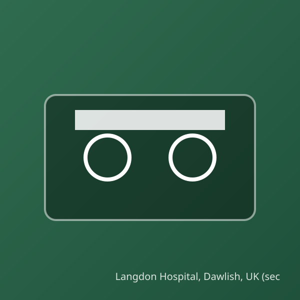

Langdon Hospital participants, Labyrinthe Des Esprits: The Cosmic Hunt

Where and when: Langdon Hospital, Dawlish, UK (secure psychiatric); Date(s): Released Apr 2025; Medium: Digital (Spirit Duplicator / Bandcamp)
Music made where it wasn't wanted, and songs that kept the score.

Where and when: Langdon Hospital, Dawlish, UK (secure psychiatric); Date(s): Released Apr 2025; Medium: Digital (Spirit Duplicator / Bandcamp)